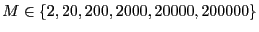
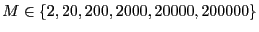

In this section, we report results of a small case study which
investigates the required flatness criterion to achieve a converged
density of states. We will consider the converged  computed
using the 80% criterion as the ``exact'' result, and compare this to
computed
using the 80% criterion as the ``exact'' result, and compare this to
 's computed using the criterion that every bin in the energy
histogram has at least
's computed using the criterion that every bin in the energy
histogram has at least  hits. We considered
. In order
to minimize the number of cycles, we will sample the histogram (that
is, query its flatness) once per cycle. We also used the same
termination criterion for the update of
hits. We considered
. In order
to minimize the number of cycles, we will sample the histogram (that
is, query its flatness) once per cycle. We also used the same
termination criterion for the update of  . In the figure below, I
show both the relative error between
. In the figure below, I
show both the relative error between  computed with the
computed with the
 -criterion and
-criterion and
 , as well as the number of
cycles required for the
, as well as the number of
cycles required for the  -criterion computation.
-criterion computation.
|